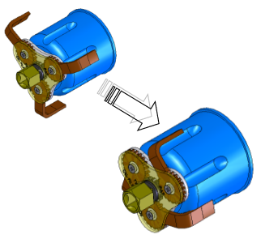
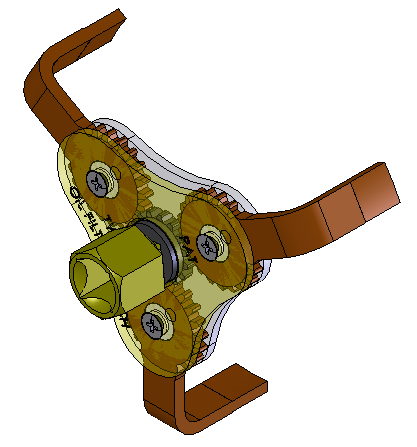

| Mise en position de la clé sur le filtre |
Maintient en position de la clé sur le filtre |
Transmettre l’effort du mécanicien |
|
 Le système d’engrenage permet le réglage automatique du diamètre en agissant sur le pignon centrale, ce qui contraint les griffes à se plaquer sur le filtre à huile . |
Pas de solution constructive assurant cette fonction sur la clé à griffes. |
 Une clé à cliquet ou plate actionne le pignon central qui entraîne directement l’ensemble de la clé à griffe et du filtre, ce qui permet de le desserrer. |
SPA08-001 clés à filtre